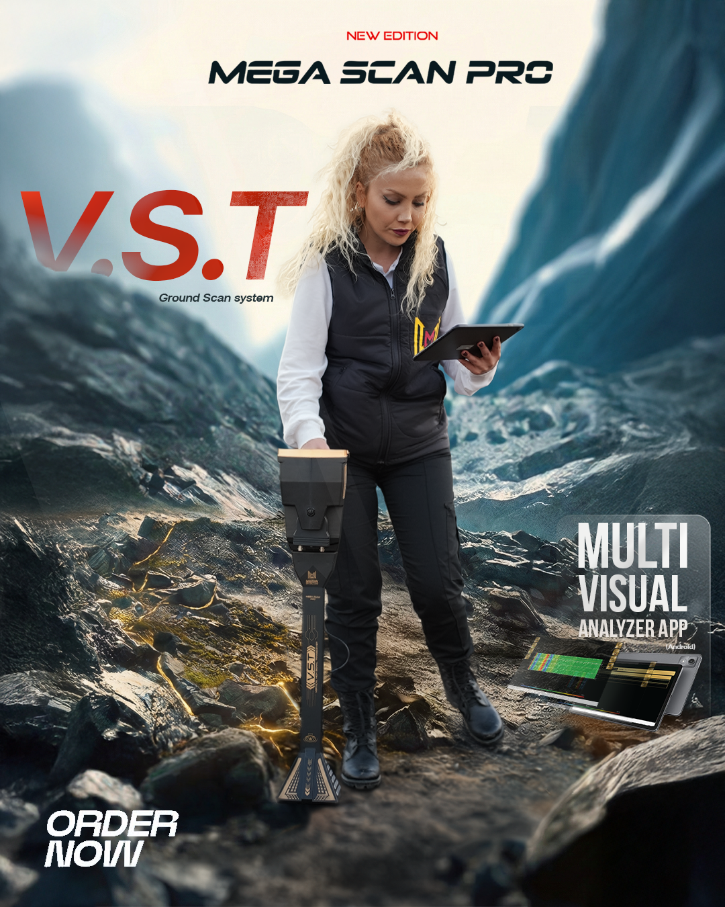
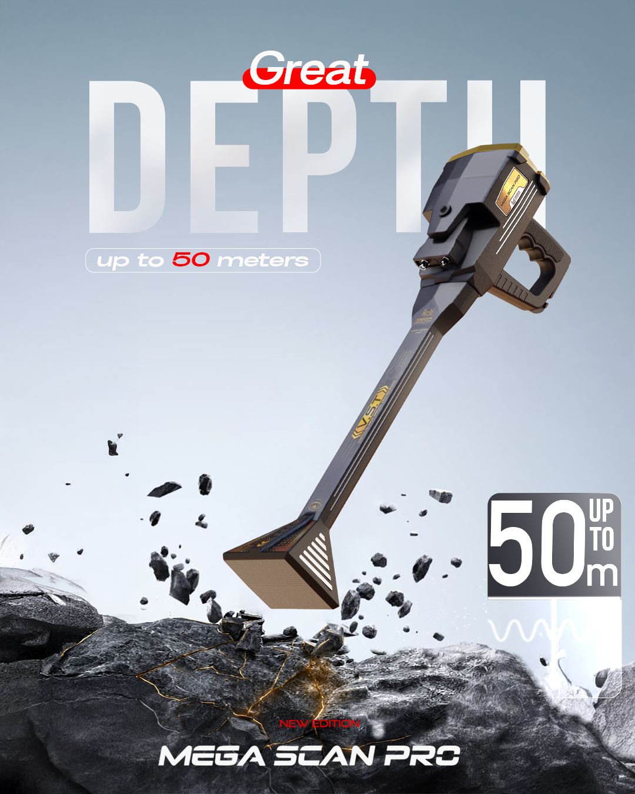
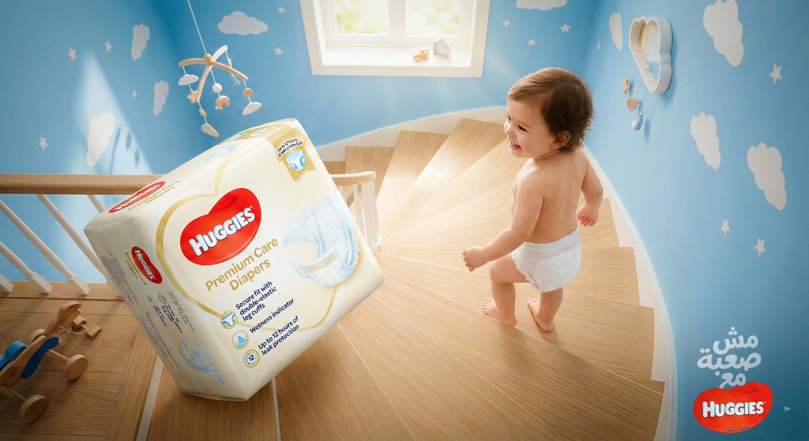
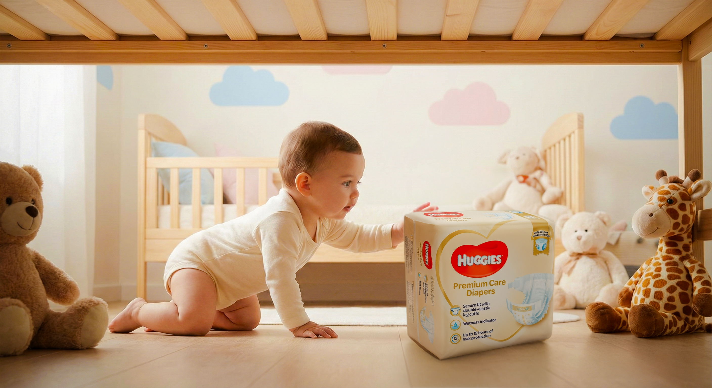
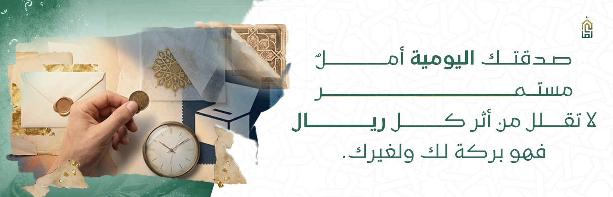
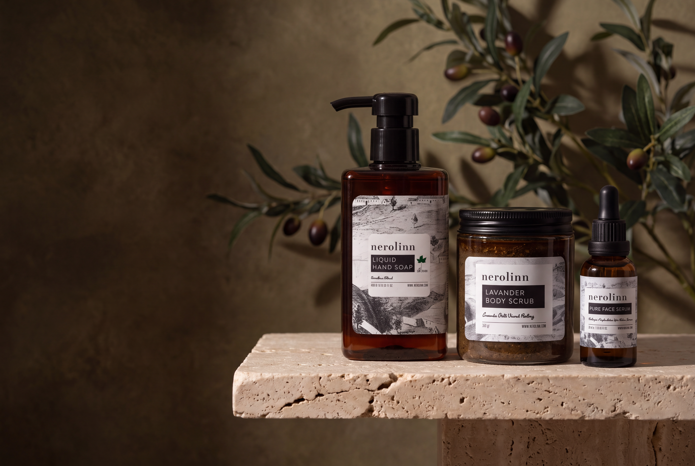
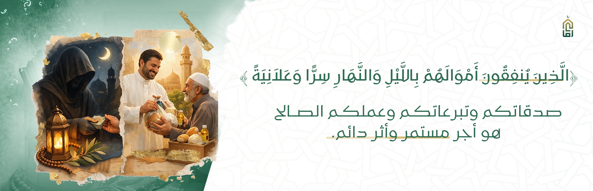

Key visuals, launches, always-on content and campaign adaptations.
Graphic Designer · Cairo / Remote
MOHAMEDAMER

Work where the product and its information both need to stay clear.
Catalogs, brochures, presentations, brand applications and web graphics.
01 / PROJECTS
I prefer showing the work as projects, not isolated posts.
Most design jobs don’t end with one image. The groups below make it easier to see what the job was, what I worked on, and how the visual direction carried from one piece to the next.
01 / Technology · 2022—2025
Orient Detectors
I worked with Orient Detectors for nearly three years. The products are technical, so a recurring part of the job was deciding how much information a design really needed. I worked across campaigns, product visuals, social media, catalogs and brochures, usually trying to keep the device itself easy to understand before adding the rest of the message.
RoleGraphic Designer
WorkCampaigns · Product visuals · Social · Catalogs · Brochures
ProblemPresent technical features without turning every layout into a specification sheet.



02 / Real Estate · Social Campaign
Real Estate Social Campaign
This set was built as a small social campaign rather than a collection of unrelated posts. The same visual language had to work for the property overview, the details and the offer, while keeping the architecture as the main subject.
RoleGraphic Designer
WorkCampaign direction · Social media · Layout adaptations
FocusKeep the property visually consistent while changing the information from post to post.


03 / E-commerce · Content Series
E-commerce Performance Content
These posts are part of one content series around store performance and sales. The challenge wasn’t creating a different look every time; it was keeping the system recognizable while giving each topic enough room to read quickly on social.
RoleGraphic Designer
WorkSocial series · Arabic typography · Information hierarchy
FocusMake data-led topics feel like one series instead of separate templates.


04 / Product · Campaign Study
Product Campaign Study
This three-piece study is about giving one product a clear visual world, then seeing whether that direction still works across more than one composition. I kept it here as a study rather than presenting it as client work.
TypePersonal / portfolio study
WorkArt direction · Composition · Product presentation
FocusKeep the product recognizable while changing scale, angle and surrounding elements.



02 / SELECTED WORK
A few pieces that add something different.
These are supporting pieces rather than full case studies. I kept them because they show a different kind of layout, brand application or image-making from the projects above.






03 / EXPERIENCE
Where I’ve worked.
The environments changed — media, in-house, freelance and agency — but the work gradually moved more and more toward graphic design.
2026
Brief Agency
Visual & Graphic Designer
Client work across social campaigns, website graphics, company profiles, presentations and digital assets. I also use AI image tools when a brief needs imagery that is difficult to source or produce directly.
2022—2025
Orient Detectors
Graphic Designer
Campaigns, catalogs, brochures, social media and product visuals for technical products.
2023—2025
Jewelry Brand
Freelance Graphic Designer
Product-led social content and promotional visuals, with most of the attention going to composition and how the jewelry is presented.
2024
PHC Elixir
Designer
Selected brand and promotional design work.
2021—2022
Al Sharq TV
Video Editor / Multimedia Designer
My first full-time creative role: news and social video, thumbnails and supporting visuals.
EDUCATION
B.Sc. Mining Engineering · Muğla Sıtkı Koçman University
04 / WORK
What I usually work on.
Campaigns & Key Visuals
Taking a brief, finding the main visual idea, then adapting it across the pieces the campaign actually needs.
Product & Social Design
Product-focused compositions, social content and promotional layouts for both technical and consumer products.
Brand, Print & Digital
Catalogs, brochures, presentations, company profiles, brand applications and website graphics.
Photoshop · Illustrator · InDesign · Figma · AI Image Generation · Premiere Pro · After Effects
OPEN TO
NEW ROLES.
I’m currently looking for full-time Graphic Designer / Visual Designer roles in Cairo or remote. I’m also open to selected freelance projects.
mohadel0300@gmail.com